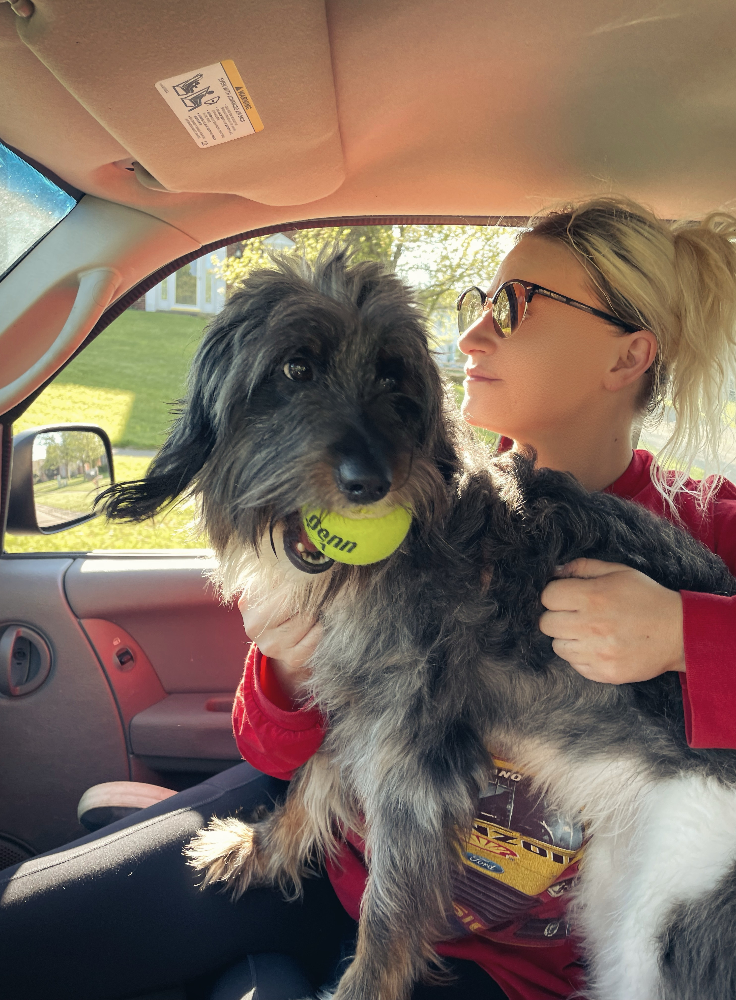

Honey
I think one of the greatest gifts in my life arrived on four legs.
No advice.
No expectations.
No conditions.
Just love.
The kind of love that shows up every single day and never asks for anything except a little time beside you.
That is Honey.
People who have never had a soul dog probably do not fully understand it.
Because they are never really just pets.
They become family.
Friends.
Comfort.
Home.
Sometimes they become the thing that helps carry us through chapters we are not sure we can survive.
Honey came into my life during one version of myself.
Then stayed through every version that followed.
The happy chapters.
The difficult chapters.
The healing chapters.
The chapters I would never choose but somehow lived through anyway.
She never cared which version showed up.
She loved all of them.
That is something I think humans struggle with sometimes.
We measure.
We judge.
We compare.
Dogs do not.
They simply stay.
I think about that a lot.
Especially during the hardest years.
The years where life felt uncertain.
The years where I questioned myself.
The years where I felt lost.
Honey never questioned me.
She never asked me to explain my mistakes.
She never asked me to prove my worth.
She never loved me less on difficult days.
She just curled up beside me and reminded me I was not alone.
Sometimes healing does not arrive as answers.
Sometimes healing arrives as a warm body laying next to you while you cry.
Sometimes healing arrives as a wagging tail when the world feels heavy.
Sometimes healing arrives disguised as a dog.
People talk about unconditional love.
I think Honey taught me what it actually looks like.
Not perfect.
Not complicated.
Just consistent.
Day after day.
Year after year.
Through every chapter.
Through every version of me.
Butterfly effect again.
Some souls enter our lives to change us. Honey entered mine to remind me I was never alone.